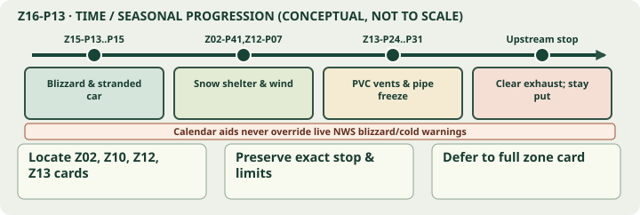

Z16-P13 · Field reference atlas · New manuscript
Upper Midwest Winter Deep-Cold and Blizzard Index
Cross-index winter wind-chill, stranded-motorist, snow-shelter, and furnace-vent hazards across Z02, Z10, Z12, Z13, and Z15.
When it applies · November through March subzero cold snaps and blizzards in Minnesota and the Upper Midwest.
Equipment · Full offline reader (Z02, Z10, Z12, Z13, Z15), primary zone cards, and local emergency and agency references.

Actions
- Anchor travel decisions to NWS Blizzard and Cold Weather advisories (Z15-P13); if stranded in a vehicle in open winter storms, stay with the vehicle when safe, keep the tailpipe strictly clear of snow, and follow NWS engine-idling CO precautions (Z15-P14).[A02, D19, X01]
- Preserve Z02 and Z12 snow-shelter limits: never imply unvalidated snow-cave roof load ratings, keep vent holes open, mark emergency exits, and prohibit indoor stoves (Z02-P41, Z12-P07).[A02, E16, C05]
- Protect household plumbing and heating during extreme cold by clearing exterior snow-drifted furnace PVC vents (Z13-P24) and maintaining safe CO-monitored indoor refuge.[A02, U07]
Failure recognition · Leaving a stranded vehicle in whiteout visibility or idling with a snow-blocked exhaust pipe causes rapid fatal hypothermia or CO poisoning.[D19, C07]
Verify · Winter vehicle kit, clear exhaust, vent checks, and non-engineering snow-shelter limits stay intact across zones.[A02, D19, U07]
Stop or change course · Stop highway travel before blizzard whiteouts hit and abandon any enclosed space immediately on CO alarm or exhaust odor.[D19, C07]
Evidence and editorial notes
- A02 · National Weather Service · Winter Weather Safety: Stranded Motorists (Current web edition)
- Section: Seasonal Upper Midwest hazard calendar synthesis · Conditions: Integrating Z02, Z03, Z04, Z11, Z12, Z13, and Z15 seasonal shifts
Support: Seasonal hazard indexes align winter cold/ice, spring flood/thaw, summer heat/storms, and autumn hunting/fire windows without overriding local forecasts.
Limitations: Calendar windows are planning aids only; real-time NWS watches/warnings and site checks govern field action. · Conflicting evidence: None noted.
Editorial note: Anchors Z16 seasonal index cards. · Specialist reviewer: Meteorologist and emergency manager
Primary source · checked 2026-11-25 - C05 · CPSC · Portable Heaters and Camping Equipment (current web edition)
- Section: Carbon monoxide poisoning from portable camping equipment · Conditions: Tents, campers, vehicles and other enclosed spaces
Support: Fuel-burning camping equipment can lead to fatal carbon monoxide buildup in enclosed spaces.
Limitations: High altitude increases incomplete combustion and CO production. · Conflicting evidence: None; aligns with CDC-CO and NPS guidance.
Editorial note: Hard-stop prohibition against indoor/vestibule/tent combustion. · Specialist reviewer: Carbon monoxide safety and emergency medicine
Primary source · checked 2026-11-24 - C07 · CPSC · Carbon Monoxide Fact Sheet (current web edition)
- Section: CO poisoning symptoms; what to do if suspected · Conditions: Suspected carbon monoxide exposure
Support: Escape to fresh air immediately and contact emergency services. Symptoms can include headache, dizziness, nausea and confusion.
Limitations: CO is colorless and odorless; symptoms mimic viral illness or altitude fatigue and can incapacitate sleepers without waking. · Conflicting evidence: None; aligns with CDC-CO.
Editorial note: Standard CO emergency stop condition across Z02 and Z03. · Specialist reviewer: Carbon monoxide safety and emergency medicine
Primary source · checked 2026-11-24 - D19 · National Weather Service · Winter Weather Safety: Stranded Motorists (Current web edition)
- Section: If stranded in a vehicle · Conditions: Stationary stranded vehicle in an open winter storm, exhaust clear, crew can monitor conditions
Support: Stay with the vehicle when safe, alert responders, and follow NWS precautions if running the engine briefly for warmth.
Limitations: Do not run with blocked exhaust or suspected CO. Timing does not make idling safe and is no indoor exception. · Conflicting evidence: See A02 claim audit for boundaries.
Editorial note: Added in A02 to separate a consequential source boundary. · Specialist reviewer: Winter SAR and CO safety
Primary source · checked 2026-11-25 - E16 · NWS · Wind Safety (current web edition)
- Section: Wind Safety > High Wind Hazards · Conditions: Forecast or developing high winds, squalls, or straight-line winds
Support: High winds topple trees, loft debris, and stress lightweight shelters beyond fabric and anchor limits; relocate out of timbered fall zones and into substantial shelter before gusts peak.
Limitations: Tents and tarps lack standardized wind-speed survival guarantees across soil types and pitch angles. · Conflicting evidence: None; avoids unvalidated mph ratings for improvised pitches.
Editorial note: Drives high-wind shelter inspection, guying limits, and abandonment thresholds. · Specialist reviewer: Weather safety and shelter equipment
Primary source · checked 2026-11-24 - U07 · U.S. EPA · Septic Systems: What to Do after the Flood (Current web edition)
- Section: Do I pump my tank during flooded or saturated drainfield conditions?; After the flood · Conditions: Flooded or saturated septic drainfield
Support: Conserve water and do not pump while the field is flooded or saturated. Arrange professional inspection and qualified servicing as conditions permit.
Limitations: Avoid use until local or professional directions allow. Tank buoyancy and recovery depend on site and system. · Conflicting evidence: See A02 claim audit for boundaries.
Editorial note: Grounds septic-system limits and outage water conservation in Z13. · Specialist reviewer: Onsite wastewater engineering and public health
Primary source · checked 2026-11-25 - X01 · Minnesota DNR · General Ice Thickness Guidelines (current web edition)
- Section: General Ice Thickness Guidelines > New Clear Ice Only · Conditions: Minnesota lakes and ponds during stable winter freezing
Support: Agency thickness guidelines apply ONLY to new, clear solid ice and are NEVER a guarantee of safety; white snow-ice is roughly half as strong, and currents, springs, inlets, outlets and snow cover create hidden thin zones.
Limitations: No ice is 100% safe; one drilled thickness check does not clear an entire crossing route. · Conflicting evidence: Directly reconciles B013 P01–P05, P11 and P17 with MN DNR warnings.
Editorial note: Enforces non-guarantee ice boundaries across Z12. · Specialist reviewer: Ice safety and winter search and rescue
Primary source · checked 2026-11-24
Source lineage · New manuscript (Z16 P20 seasonal index) · Classification · New manuscript.